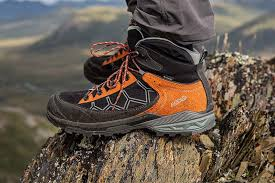

Gear Guides
How to Choose the Right Hiking Boot
Cut, sole, waterproofing, and fit — our guide to choosing a hiking boot that will keep you comfortable on any trail, from maintained paths to off-trail terrain.
Trail tips, gear guides, and trip reports from the Summit Trail Outfitters team.

Gear Guides
Cut, sole, waterproofing, and fit — our guide to choosing a hiking boot that will keep you comfortable on any trail, from maintained paths to off-trail terrain.
Trail Tips
The ten essentials have been the standard for decades — but modern gear and trail conditions have refined the list. Here is what our guides actually carry on every tour.
Trip Reports
October is the most underrated month to hike in the Pacific Northwest. Crowds are thin, the air is clear, and the larches are turning gold. Here are our top five routes.